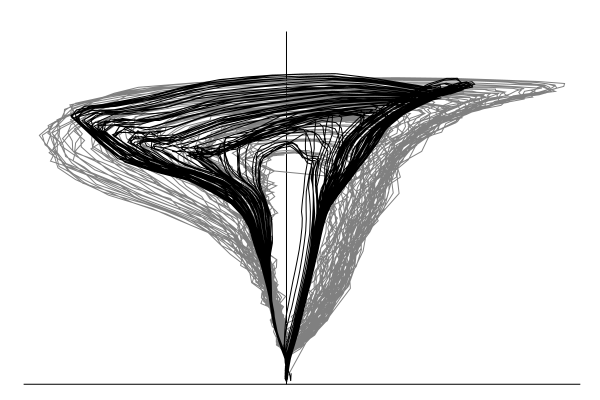
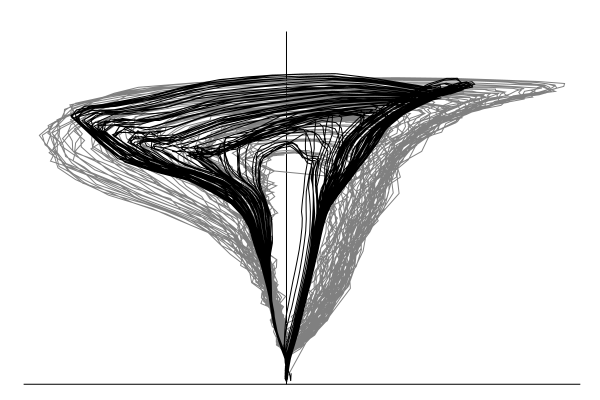

A state-space model for stage and discharge
Start with the shallow water equations
\[\begin{eqnarray}
\frac{\partial H}{\partial t} + \frac{\partial}{\partial x_i} Hu_i &=& 0\\
\frac{\partial}{\partial t} Hu_i +\frac{\partial}{\partial x_j} Hu_i u_j &=& -gH\frac{\partial \eta}{\partial x_i} - \frac{gn^2u_i|\mathbf{u}|}{H^{1/3}}
\end{eqnarray}\]
Let \(x_t = \begin{bmatrix} H(r,t) \\ \mathbf{u}(r,t)\end{bmatrix}\) and then define an operator \(A_{\theta}[\cdot]\) that propagates this vector ahead in time via the solution of the shallow water equations. Note the presence of parameters, \(\theta\), which include the bathymetry, friction coeffcients, boundary conditions, etc.
\[\begin{eqnarray}
x_{t+1} &=& A_\theta[x_t] + \varepsilon_t \\
y_{t} &=& H(r_0,t) + \zeta_t = B_\theta[x_t] + \zeta_t \\
z_{t} &=& Q(r_0,t) + \xi_t = C_\theta[x_t] + \xi_t
\end{eqnarray}\]


 
